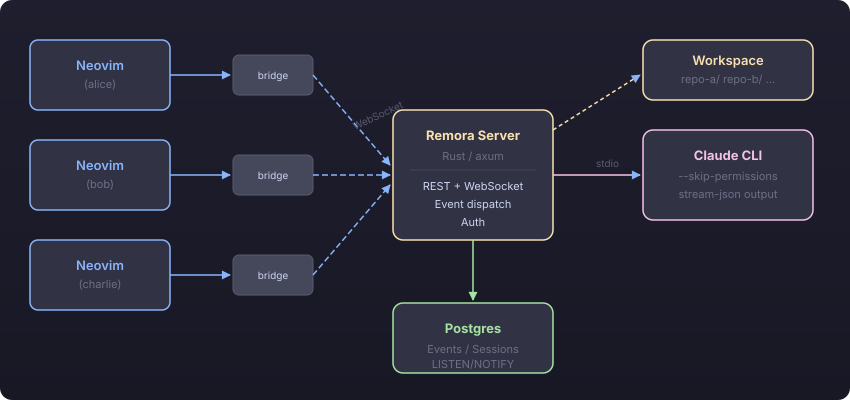
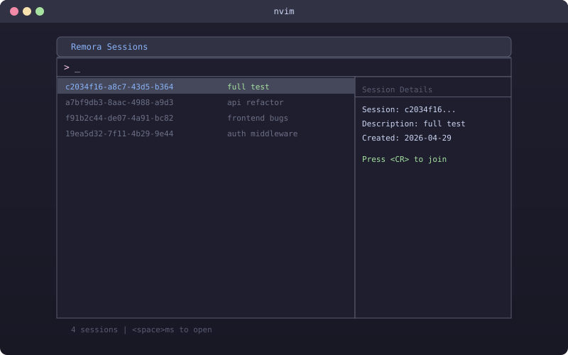
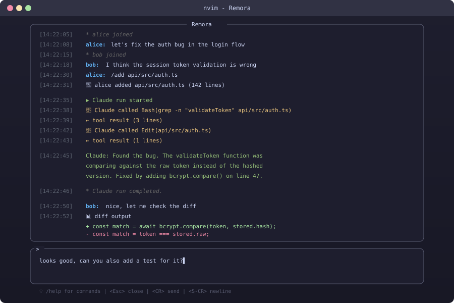
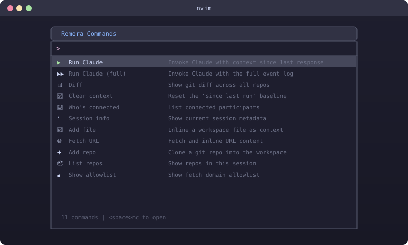

Multiple devs share a single Claude session with a shared, append-only event log. Chat freely, add context, and invoke Claude together — all from inside Neovim.
Everything you need for collaborative AI-assisted development
Multiple developers share a single Claude session. Everyone sees messages, tool calls, and responses as they happen.
Telescope pickers for sessions and commands. Syntax-highlighted chat window. Feels like a natural part of your editor.
Inline files, fetch URLs, view diffs — everyone contributes context that Claude uses when invoked.
Everything persisted in Postgres. Reconnect anytime and get the full history. Nothing is ever lost.
Rust (axum) server with WebSocket fan-out via Postgres LISTEN/NOTIFY. Restart anytime — no state lost.
Shared team tokens, per-session allowlists for URL fetching, and global daily token caps for cost control.
From session creation to collaborative AI-powered coding
One dev creates a session, optionally cloning git repos into the shared workspace.
Teammates connect by session ID using the Telescope picker (<space>ms).
Send messages, inline files (/add), fetch URLs (/fetch), view diffs (/diff).
Anyone types /run and Claude sees all context since the last response.
Tool calls, file edits, and responses stream to everyone in real-time.
Keep chatting, adding context, and running Claude as a team. Full history persists.

See Remora in action inside Neovim

Browse and join sessions with Telescope. See session descriptions, participant counts, and repo info at a glance.

Real-time event log with syntax highlighting. Everyone sees chat, tool calls, and Claude's responses as they happen.

Fuzzy-searchable command palette for all Remora actions. Quick access to every feature without memorizing keybindings.
Get up and running in minutes
Requires Postgres and the Claude CLI installed and authenticated.
# Create database
sudo -u postgres psql -c \
"CREATE USER remora WITH PASSWORD 'your-password';"
sudo -u postgres psql -c \
"CREATE DATABASE remora OWNER remora;"
# Configure
cp .env.example .env
# Edit .env with DATABASE_URL, REMORA_TEAM_TOKEN
# Build and run
cargo build --release -p remora-server
source .env && ./target/release/remora-serverBuild the bridge binary, then add to your config with lazy.nvim:
{
"Logan-Garrett/remora",
dependencies = {
"nvim-telescope/telescope.nvim"
},
config = function()
require("remora").setup({
bridge = vim.fn.expand("path/to/remora-bridge"),
url = "http://your-server:7200",
token = "your-team-token",
name = "yourname",
})
require("telescope").load_extension("remora")
end,
}| Key | Action |
|---|---|
<leader>mm | Toggle Remora window |
<leader>ms | Browse sessions (Telescope) |
<leader>mc | Command picker |
<leader>mn | Create new session |
<leader>mr | Run Claude |
<leader>md | Show diff |
<leader>mw | Who's connected |
<leader>ml | Leave session |
This documentation site was itself created collaboratively using Remora. A developer and Claude worked together in a shared session — the developer described the vision, added context about the project, and Claude generated the code. Real-time collaboration between humans and AI, exactly as intended.